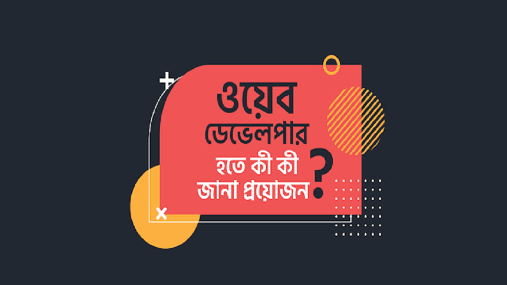

ওয়েব ডেভেলপার হতে হলে কী কী জানা প্রয়োজন?
একজন সফল ওয়েব ডেভেলপার হওয়ার এমন কোনো কোর্স কিট নেই যেটা মেনে বাক্সে টিক দিয়ে দিয়ে আপনাকে এগোতে হবে। এই পেশায় এমন অনেকেই আছেন যারা স্বশিক্ষিত অর্থাৎ Self-taught। আবার এমনও অনেকে আছেন যারা এই ফিল্ডে পড়াশোনা করেও পেশা হিসেবে অন্য কিছু বেছে নিয়েছেন।
গৎ বাঁধা তালিকা না থাকলেও, এমন কিছু বেসিক দিক নির্দেশনা আছে যা অনুসরণ করলে আপনি আপনার Web Development-এর যাত্রায় খেই সামলে চলতে পারবেন।
সবথেকে বেশি যে প্রশ্ন আমাদের শুনতে হয় তা হলো, “আমার কি CSE তেই পড়তে হবে ওয়েব ডেভেলপার হতে চাইলে?” বিশেষ করে আপনারা যারা বিশ্ববিদ্যালয়ের পাট চুকিয়ে এসেছেন আরও অনেক আগে এবং নতুন করে পেশা বদলের কথা ভাবছেন তাদের জন্য এটা একটা খুবই বড় চিন্তার বিষয়। তাই শুরু করার আগে একটু Academic Requirements নিয়ে কথা বলে নেই।
শিক্ষাগত যোগ্যতা
Web Development-এর দুনিয়ায় একজন সিনিয়র ওয়েব ডেভেলপার হিসেবে কাজ করতে হলে যেকোনো কোম্পানির Job Requirement-এ সাধারণত কিছু একাডেমিক বাধ্যবাধকতা থাকে। কিন্তু সেক্ষেত্রে মেজর যে সবসময় CSE-ই হতে হবে তা কিন্তু নয়। তবে হ্যাঁ, বেশিরভাগ ক্ষেত্রেই রিকোয়ারমেন্ট একটি Bachelor's ডিগ্রী চাওয়া হয় এবং ডেভেলপার এর জব হিসেবে আপনার এই Bachelor's ডিগ্রী টি Computer Science বা এই সম্পৃক্ত কোন ফিল্ডে হলেই বেশি ভালো। এটা শুনে হতাশ হয়ে পড়লে চলবে না। কারণ এটা বেদবাণী নয়। অভিজ্ঞতা ও দক্ষতার ভিত্তিতে অনেক সময়ই ডিগ্রী তেমন গুরুত্ব পায় না। এটাও মনে রাখা দরকার যে একজন ওয়েব ডেভেলপার-এর দক্ষতা সবসময় ডিগ্রী নির্ভর হয় না। আপনি আপনার দক্ষতা কিভাবে, কখন অর্জন করেছেন তার চাইতে বেশি জরুরি হল আপনি কাজটি কত দক্ষতার সাথে করতে পারবেন। চাকরির কদর ও সম্ভাবনা বেশি থাকায় হরহামেশাই অন্যান্য Engineering ফিল্ডের Graduate-রা Web Development কে পেশা হিসেবে বেছে নিচ্ছেন। এতে তাদের ডিগ্রী বাধা হয়ে দাঁড়ায় না।
সার্টিফিকেট প্রোগ্রাম
সার্টিফিকেট প্রোগ্রামগুলোকে একজন দক্ষ ডেভেলপার হিসেবে আপনার প্রমাণপত্র বলা যায়। বিশেষ করে যেসব ওয়েব ডেভেলপারদের Academic Background এই ফিল্ডের সাথে সম্পৃক্ত নয়, তাদের জন্য এই সার্টিফিকেট প্রোগ্রামগুলোর তুলনাহীন। চাকরির বাজারে এই Certificate Program গুলোর মাধ্যমে আপনার ইমপ্লয়ার বুঝতে পারবেন আপনার দক্ষতা কেমন এবং আপনি কাজের দিক থেকে কতোটা বিশ্বাসযোগ্য। অনেক কোম্পানিরই অনলাইন সার্টিফিকেট প্রোগ্রাম আছে, যেমনঃ Microsoft, Amazon Web Services, Adobe Certified Expert। সার্টিফিকেট প্রোগ্রামগুলো সাধারণত কয়েক মাস থেকে কয়েক বছর পর্যন্ত চলতে পারে। এসব প্রোগ্রামগুলো সম্পূর্ণ শেষ করার পর আপনার অভিজ্ঞতা এবং Professional Credibility অনেকখানি এগিয়ে থাকবে।